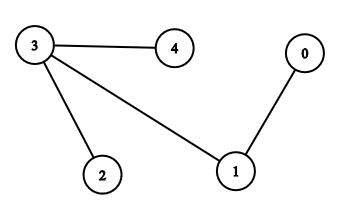

Network of GCNs (N-GCN)
Written by : Neetu Murmu
Introduction to N-GCN
We see many graph-structured data in real-life scenarios such as social media network, fraud detection, and protein-protein interaction data in biological science. But, often times it's a challenging task to solve learning problems on graphs due to their high complexity. We will cover N-GCN in this blog which is a network of multiple GCN (Graph Convolutional Network) instances. If you're not familiar with GCN, you can read this post on GCN. Basically, graph convolution generalizes convolution from Euclidean domains to graph-structured data. It involves storing states for each node and using an adjacency matrix to propagate those states to the nodes’ neighbors. States for each node could be their features (given or derived using random walk.) Given a graph G, GCN takes following inputs:
- Adjacency Matrix \((N * N \))
- Feature Matrix \((N * F^{(i)} \)),
And, outputs a \((N * F^{(o)} \)) matrix, where N = Number of nodes, \(F^{(i)} \) = # input features, \(F^{(o)} \) = # output features
Concepts you need to be familiar with:
- Graph Convolution Network (GCN) : As mentioned above, please follow the blog post.
- Random walk : A graph traversal method in which a random sequence of nodes (of a certain length) are traversed, where each consecutive pair of nodes are connected by an edge.
- Graph Embedding : Each node is represented as d-dimensional vectors. The vector is calculated to have useful properties, for example the dot product of any two nodes’ embeddings could tell you if they’re from the same community. [4]
You can refer to [4] to learn more about different approaches to solve graph-structured problem.
Now that you're familiar with the concepts above, let's dive into N-GCN. This blog post tries to summarise different approaches and methods proposed in the paper N-GCN: Multi-scale Graph Convolution for Semi-supervised Node Classification by Sami Abu-El-Haija et al. [1]
Individually, GCN and random walk graph embedding are very powerful. Graph Convolutional Networks (GCNs) have shown significant improvements in semi-supervised learning on graph-structured data. Concurrently, unsupervised learning of graph embeddings has benefited from the information contained in random walks. Network of GCN (N-GCN) combines these two lines of work.[1]
To learn more about semi-supervised learning on graph data, you can read research paper [2] or blog post [5] linked below.
Architecture
We consider K instantiantions of GCN, where each module takes as input a different power of normalized adjacency matrix A i.e. \( \hat{A}\), as in \(GCN( \hat{A}^{0}, X) \, ,\) \(GCN( \hat{A}^{1}, X) \, ,\)....... \(GCN( \hat{A}^{K-1}, X) \, \).
The k-th power of \( \hat{A}\) corresponds to the k-th step random walk on the graph and X is the feature matrix. Each GCN instance outputs a matrix R(N x Ck), where Ck is number of output features and the v-th row of of output matrix describes latent representation of v-th node for that particular GCN.
We then combine the output of all GCNs and feed them into prediction(classification/regression) sub-network, and jointly train all the GCN modules and prediction network using backpropagation.
Replication Factor
Above described method feeds each power of \( \hat{A}\) to only one GCN, but we could also choose to increase the number of GCN modules we feed each power of \( \hat{A}\) to, and the factor by which we increase GCN modules per \( \hat{A}\) power is called replication factor.
Intuition behind architechture
Paper [1] proposes explicit random walk in a graph as follows:\[ \hat{A}^{k} = D^{-1/2}AT^{(k-1)} D^{-1/2}\, ,\]
Random walk step-by-step
Let's see what random-walk in a graph would look like using following graph:
We create adjacency matrix for the graph, and then add self-loop to each node as in suggested in [2] :
In[1] : A = np.array([[0, 1, 0, 0, 0], [1, 0, 0, 1, 0], [0, 0, 0, 1, 0], [0, 1, 1, 0, 1], [0, 0, 0, 1, 0]], dtype=float) I = np.eye(A.shape[0]) A = A + I A Out[1] : array([[1., 1., 0., 0., 0.], [1., 1., 0., 1., 0.], [0., 0., 1., 1., 0.], [0., 1., 1., 1., 1.], [0., 0., 0., 1., 1.]])
Now, let's observe random walk on each node, and see how it traverses other nodes by applying the explicit random walk method, for now, let's just take Node 0 as an example.
Random Walk : Step 1
1 - step random walk means node will traverse only those nodes that are directly connected to it, for Node 0, it will only traverse Node 1, graph after first random walk should look like following, darkened nodes indicate already traversed nodes.
Now, let's see what adjacency matrix would look like after performing random walk according to the formula given above: (get_A_hat_power() is a function that calculates the formula, refer to this notebook for the codes)
In[2] : A_hat_1 = get_A_hat_power(1, A, D, T)
A_hat_1
Out[2] : array([[0.5 , 0.40824829, 0. , 0. , 0. ],
[0.40824829, 0.33333333, 0. , 0.28867513, 0. ],
[0. , 0. , 0.5 , 0.35355339, 0. ],
[0. , 0.28867513, 0.35355339, 0.25 , 0.35355339],
[0. , 0. , 0. , 0.35355339, 0.5 ]])
We can see that, connections are same as original matrix only normalized because if we put k=1 in random walk formula, T becomes 1, and then it's basically computing normlization of A.
Random Walk : Step 2
After 2-steps random walk, Node 0 will traverse upto Node 3, graph would look like following:
Let's see adjacency matrix after random walk 2 :
In[3] : A_hat_2 = get_A_hat_power(2, A, D, T)
A_hat_2
Out[3] : array([[0.41666667, 0.34020691, 0. , 0.11785113, 0. ],
[0.34020691, 0.36111111, 0.10206207, 0.16839383, 0.10206207],
[0. , 0.10206207, 0.375 , 0.26516504, 0.125 ],
[0.11785113, 0.16839383, 0.26516504, 0.39583333, 0.26516504],
[0. , 0.10206207, 0.125 , 0.26516504, 0.375 ]])
In adjacency matrix, now there is a connection between Node 0 and Node 3, which means it has accumulated information from upto 2nd degree connections. Similary, you can check for the other nodes' random walks e.g. Node 1 will traverse upto Node 2 and 4.
Random Walk : Step 3
By the end of 3rd step random-walk, each node would have traversed every other nodes in the graph. For Node 0, it would traverse remaining Nodes 2 and 4.
Adjacency matrix after 3rd-random walk :
In[4] : A_hat_3 = get_A_hat_power(3, A, D, T)
A_hat_3
Out[4] :array([[0.34722222, 0.31752645, 0.04166667, 0.12767206, 0.04166667],
[0.31752645, 0.30787037, 0.11056725, 0.21851104, 0.11056725],
[0.04166667, 0.11056725, 0.28125 , 0.27253074, 0.15625 ],
[0.12767206, 0.21851104, 0.27253074, 0.33506944, 0.27253074],
[0.04166667, 0.11056725, 0.15625 , 0.27253074, 0.28125 ]])
When we feed k-th step of random walk into GCN, we are allowing N-GCN to use information from upto k-th degree connected node in graph. This gives prediction network freedom to choose features from various GCNs, and effectively allowing entire model to learn a combination of features[1] opposite to the case in vanilla GCN, where there were no explicit random-walks.
N-GCN Random walks vs GCN Depth
Although, we can compare explicit random-walk steps in N-GCN to GCN depth i.e. number of GCN layers, but there is a difference; for N-GCN, we perform explicit random walks according to the formula described above, but in GCN, although the nodes' informations are propagated to the neighboring nodes, in the process, information also goes through non-linearity and matrix-multiplication and hence, this propagation is indirect and GCN isn't able to learn random-walks directly.
Under cetain conditions it's possible for GCN model to learn high powers of \( \hat{A}\) i.e. random walks, but those conditions aren't always true in practice and hence, GCN struggles with modeling information from distant nodes. [1] (Refer to section 3.1 for mathematical details)
Inspiration from unsupervised Node Embedding Methods
In recent times, we have seen that node embedding methods utilizing random-walk technique outperforms other traditional methods for graph embedding.
And, we have also seen how vanilla GCN is not able to learn random-walks directly.
So, in the paper, they hypothesize that making the GCN directly operate on random walk statistics will allow the network to better utilize information across distant nodes,
in the same way that node embedding methods operating random-walk statistics are superior to traditional embedding methods operating on the adjacency matrix. [1]